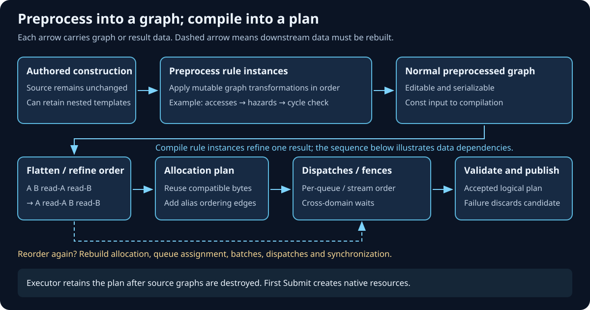
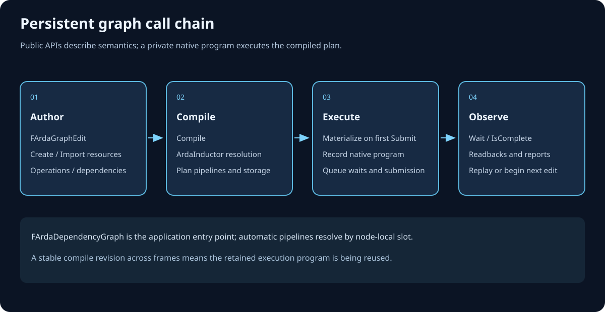

Persistent dependency graphs
Architecture
Preprocessing returns a semantic graph; const compilation produces a separate native execution plan.
Learning objectives
Distinguish node definitions, persistent instances and native plans, and trace their identities and lifetimes.
Definition, instance, plan
FArdaNodeRegistry owns immutable named definitions; graphs own typed instances and snapshots. Preprocessing expands nodes, resolves edges and marks culled work. ArdaInductor reads the resulting graph to infer pipelines, select queues and plan storage. Native recording and barrier lowering remain private implementation details.

Source ownership follows the three lifetimes
The module lives in Source/ArdaInfra/ArdaDependencyGraph. Its public entry is ArdaDependencyGraph.h; narrower includes use the owning directory below. Public declarations and private implementations use the same responsibility boundaries, so an implementation detail does not become public just because its source sits beside related interfaces.
| Directory under Public / Private | Responsibility |
|---|---|
Graph/Resources | Logical handles, descriptors, imports and resource resolution contexts. |
Graph/Node | Graph editing, node instances, definitions, registry, parameters, bindings, topology and structural archives. The graph exposes Serialize/Deserialize and Save/Load; archive file access delegates to backend shared helpers. |
Graph/DefaultNodes | Reusable copy, upload, readback, texture and acceleration-structure operations. |
Inductor/Config | Compilation, scheduling, timing and execution options, ordered rule-instance lists and immutable per-instance configuration. |
Inductor/Preprocess | Standalone preprocessing and graph rules for recursive expansion, stage assembly, dependency construction and culling. |
Inductor/Rules | Shared analysis helpers and compatibility includes for relocated rule headers. |
Inductor/Compiler | Const graph compilation and result rules: pipeline inference, ordering, allocation, queue assignment, batching, dispatches and fences. |
Inductor/Runtime | First-submission materialization, frame resources, bindings, native recording, submission, completion and telemetry. |
Graph declarations describe what an operation means. FArdaPreprocessor returns a new editable, serializable graph with semantic descriptions and optimization flags. TArdaGraphPreprocessRule owns transformations of that graph; its editing callback can insert registered nodes. TArdaGraphCompileRule receives a const view and changes only a separate result. Native node wrappers, per-draw state, layouts, schedules and allocation plans belong to compilation. Runtime materializes graph-owned GPU storage only at submission. Legacy Prepare hooks can still create node-owned setup objects during authoring; the executable overlay remains result-owned.
For example, two independent upload nodes and a consumer produce the same dependency constraints under search or a custom ready-list policy. The chosen order may change peak memory and queue overlap, but every policy must preserve those constraints and pass the same memory checks. Runtime receives the accepted plan rather than rerunning an application policy during each frame. See the worked custom-order example.
Stable identities and ownership
Handles contain graph identity, index and generation. Foreign, deleted and abandoned-edit handles are invalid. Instances retain definitions, parameters and imports. Frame slots retain physical storage, CUDA caches, readbacks and timestamps. Tickets retain completion state after slot reuse.
Resource causality
Ordering is determined per overlapping byte or texture-subresource region. A region with one producer orders its readers after that producer, regardless of attachment order. With multiple writer nodes, original successful attachment order fixes overlapping write/write, write/read and read/write hazards. Reads observe the preceding writer; imports may supply initial contents before the first write, while owned reads need prior initialization. Disjoint regions remain independent. Repeated writes use one resource; separate output handles preserve separate values.
Explicit edges add constraints and cannot contradict resource ordering. Pure joins and compiler-classified typed stage providers contract dependencies without empty GPU submissions. Culling retains ancestors of observable work, including hazard predecessors; it does not eliminate overwritten stores. See the write-read-write example and dependency construction.
Preprocess, compile and replay
Graph.Preprocess() leaves its input unchanged and returns a normal graph marked preprocessed. Save that graph to preserve its optimized topology, bind any external slots after loading, then pass it by const reference to FArdaInductor::Compile. The result retains the declarations needed by FArdaGraphExecutor, so source graphs need not outlive execution. The persistent Graph.CompileAndWait() facade coordinates these phases and revision caching for repeated frames. Failed preprocessing or compilation leaves the input graph intact. The standalone recipe traces each ownership boundary.

Native execution

SubmitAndWait() first materializes pending resource, pipeline and binding plans, then selects a frame slot and submits ordered native work. Wait() completes tokens and publishes outputs. ExecuteAndWait() performs both. Compilation retires outgoing submissions when switching runtimes; destruction also retires this graph’s outstanding submissions.
External synchronization
Serialize graph edits and submissions. Independent recording waves may run concurrently, so callbacks must avoid unsynchronized shared mutation. Physical reuse needs GPU completion ordering, not merely non-overlapping CPU list positions.
Chapter summary
Graphs own semantics and culling decisions. Preprocessing returns another graph, const compilation returns a plan, and an executor owns native frame lifetime. A serialized graph can be rebound and compiled independently of the source process.
Source and API
Read the developer guide, pipeline guide, public API reference and graph declarations.